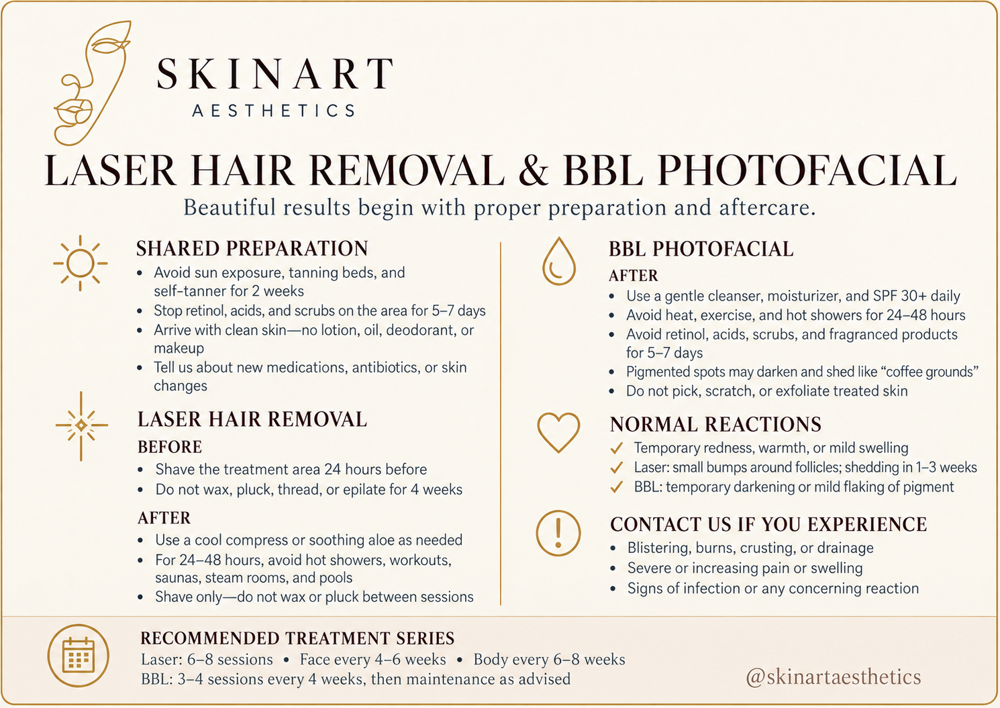
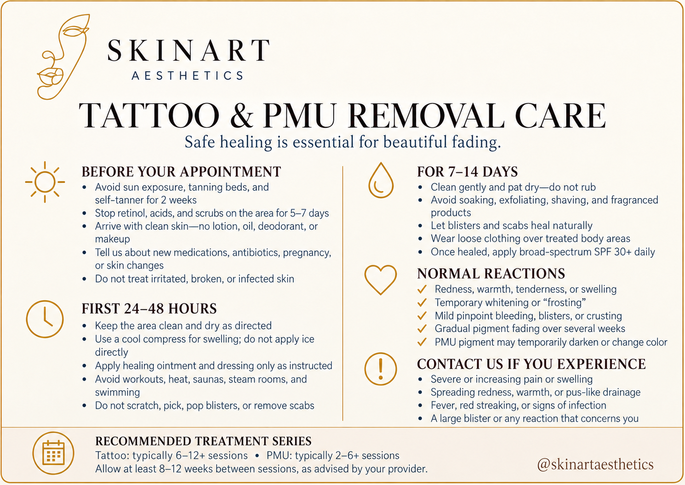

Choose your treatment below for personalized aftercare guidance.

After a professional facial, your skin may appear slightly flushed or feel more sensitive than usual — typically resolves within a few hours.
Mild redness, warmth, or temporary sensitivity are common. Skin may feel more hydrated, or show minor spots where extractions cleared congestion. These resolve within 24–48 hours.
Dermaplaning removes dead skin cells and fine vellus hair. The skin is temporarily more sensitive after treatment.
Dermaplaning removes vellus hair (fine, colorless fuzz). It does not change follicle structure — hair returns at the same texture and color as before.

The days following a chemical peel are as important as the treatment itself.
BioRePeel is a minimal-downtime treatment. Most clients return to normal activities the same day.
Skin may appear bright and slightly flushed for a few hours. Most clients experience little to no visible peeling, though some may notice mild flaking within 48–72 hours.

Microneedling creates intentional micro-injuries to stimulate collagen production. Recovery is part of the process.

Recommended series: 6–8 sessions — Face every 4–6 weeks · Body every 6–8 weeks
Recommended series: 3–4 sessions every 4 weeks, then maintenance as advised

Q-switched YAG laser shatters ink particles for your immune system to clear over the following weeks.
Stay hydrated and avoid smoking to support faster ink clearance. Sessions spaced 6–8 weeks apart.
PMU inks are deposited more superficially than body tattoos, often meaning faster fading — but aftercare is equally important.

Brow lamination straightens and lifts brow hairs. The first 24 hours are critical for setting the result.
A lash lift curls and lifts your natural lashes. The setting process continues for 24 hours after treatment.
Avoid wetting the eye area for 24 hours — the tint bonds during this window.